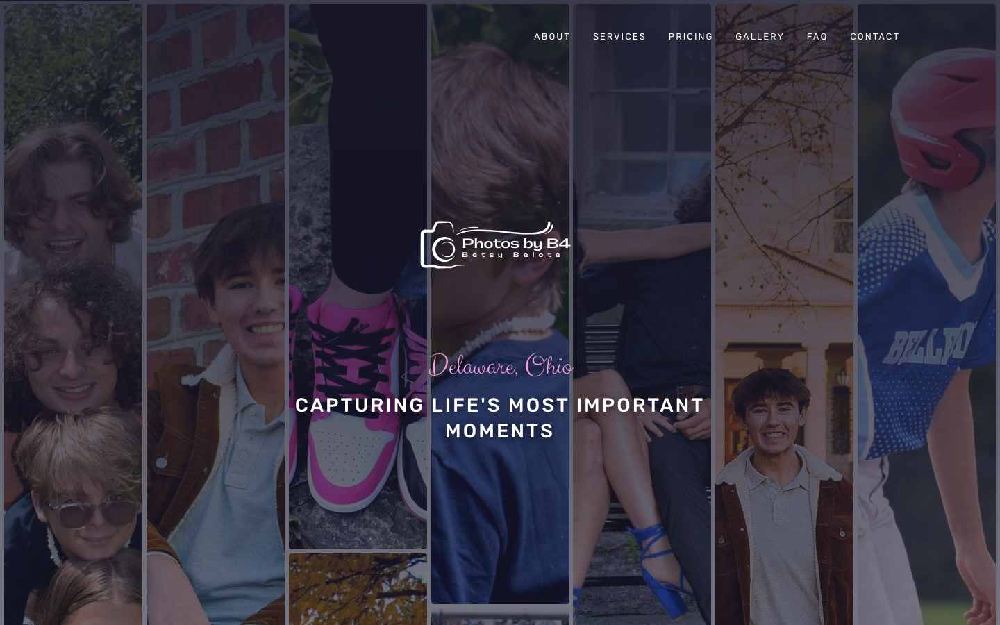

Betsy Belote has been photographing the people of Delaware, Ohio for years — and the evidence is in the work itself. Her gallery holds over 140 images spanning three core disciplines: youth and varsity sports, senior portraits, and family sessions. That range matters. It means she's not a one-season shooter waiting for graduation weekend. She's out on sidelines in the fall, in open fields for golden-hour portraits in spring, and on back porches with families year-round.
Sports photography is her deepest catalog — 65 images covering baseball, basketball, soccer, volleyball, and more. She captures athletes at the peak of motion: the swing follow-through, the block at the net, the steal. These aren't posed setups. They're real moments from real games, and they're exactly what parents and athletes want to remember. Her senior portrait work (25 images) shows the same instinct — natural poses, genuine smiles, locations that feel personal rather than generic studio backdrops. And her family sessions (45 images) reflect the kind of ease that only comes from a photographer who makes people feel comfortable before the shutter clicks.
What Betsy didn't have before working with Aspire was a website that matched the quality of her work. Her photography speaks for itself — but people searching "family photographer Delaware Ohio" or "senior portraits central Ohio" were landing on a digital presence that undersold what she actually does. Her social channels — Instagram and TikTok at @photosby_b_4, plus an active Facebook presence — showed engagement and real community. The question was how to channel that energy into a site that converts visitors into booked sessions.
The real-world reviews tell you everything you need to know about how Betsy's clients feel about her work:
"Highly recommend! Betsy is easy to work with."
— Jason S."These are amazing!"
— Mary D."I love them so much."
— Jessica M."You've got some real talent here."
— Elizabeth H.When Aspire takes on a project, we measure ourselves against the same standards we'd apply to any business. Here's how photosbyb4.com scores on the dimensions that matter for a local photography business.

photosbyb4.com — live on production · Astro 6 on Cloudflare Workers
prefers-reduced-motion. No JavaScript animation library, no jank, no accessibility concerns.We built photosbyb4.com on Astro 6 deployed to Cloudflare Workers. That's not an arbitrary choice. Astro ships zero JavaScript by default — the pages are rendered server-side and delivered as fast, static HTML. Cloudflare Workers run at the edge, meaning the site loads from a server geographically close to the visitor no matter where they are. For a local photographer competing on search, every millisecond of page load speed is a ranking factor. We built the fastest version of this site that's possible.
Delaware, Ohio has a modest but competitive photography market. The clearest direct competitor we found was Exactly You Boudoir — a professional photography studio in Delaware with a 5.0-star Google rating across 53 reviews. They're polished, review-rich, and have strong local authority. Here's how Photos by B4 compares across the dimensions that drive local discovery and booking decisions.
53 verified Google reviews at 5.0 stars is a formidable review profile. Review count is a direct ranking signal for local SEO — Google interprets volume as a signal of sustained quality and business longevity. Betsy's work quality is clearly 5-star territory based on what her clients say. The gap is purely in the number of formal reviews captured. That's fixable, and closing it is a high-priority growth move.
Photos by B4 is the only Delaware-area photographer with transparent, tiered pricing published online. This is a conversion differentiator that most photographers actively avoid out of fear of losing negotiating room. The data doesn't support that fear — pricing transparency reduces inquiry friction and pre-qualifies leads. A parent searching for sports photography who sees Bronze at $100–200 knows immediately whether they're in range. That's fewer emails to answer and better-matched clients arriving in the booking flow.
Local photography search follows a predictable pattern: parents, athletes, and families use highly specific queries. They know what they want — they're looking for the right person in the right place. The keywords below represent the queries that bring high-intent, ready-to-book visitors directly to photosbyb4.com.
The Aspire-built site targets these keywords through a combination of on-page signals: page titles and meta descriptions written with local terms embedded, JSON-LD LocalBusiness schema that explicitly declares Delaware, Ohio as the service area, structured heading hierarchy (H1 → H2 → H3) that signals topical relevance to crawlers, and image alt text on every one of the 140+ gallery photos describing the subject and sport.
The gallery category structure — Sports, Senior Portraits, Family — mirrors exactly how people search. Someone landing on the Sports gallery category sees 65 photos of exactly what they came to find, with a booking CTA persistent in view the entire time. The site architecture is designed around the search intent, not around what's convenient to build.
Senior portrait searches spike in early spring (January–April) as juniors start planning fall senior sessions, and again in late summer (July–September) as the school year begins. Sports photography peaks in fall (August–November) and spring (March–May). Family photography has a strong fall push (September–November) driven by holiday card season. The site is ready to capture all three windows — but a Google Business Profile content calendar tied to these seasonal peaks would amplify organic reach significantly during each spike.
Search is changing faster than most businesses realize. In 2025 and 2026, the question isn't just "does Google rank my site?" — it's "does Google's AI Overview cite my business?" and "does ChatGPT recommend me when someone asks for a photographer in Delaware, Ohio?" The answers depend on signals called E-E-A-T: Experience, Expertise, Authoritativeness, and Trustworthiness. Here's how photosbyb4.com scores against each.
140+ real photos from real sessions are the most powerful experience signal a photographer can have. Every image is evidence of work done. No stock, no mock-ups.
Three distinct disciplines (Sports, Senior, Family) with organized gallery depth per category show range and competence. The site structure itself communicates mastery.
Real reviews from named clients, active social presence, and a professional website build the authority picture. Review growth will compound this signal over time.
Privacy policy, terms of service, transparent pricing, and structured JSON-LD data create the technical trust signals that search engines measure. These are live on the site now.
When someone asks ChatGPT or Google's AI Overview "who's a good sports photographer in Delaware, Ohio?" the AI system pulls from indexed, structured content. The JSON-LD schema we built into photosbyb4.com explicitly declares: business name, business type (Photographer), service area (Delaware, Ohio), services offered, and contact information. That structured data is what AI extraction systems need to confidently cite a business.
The 140+ WebP images with descriptive alt text also contribute here — Google's image search and AI understanding of visual content relies on alt text as the primary text signal. "Senior portrait, young woman, golden hour, Delaware Ohio" is how a photograph becomes searchable by intent, not just filename.
Voice queries are conversational: "Hey Siri, find a photographer for senior pictures near me" or "OK Google, who does family photos in Delaware Ohio?" The site's geo-tagged schema, local service area declarations, and Google Business Profile (GBP) connection are exactly what voice assistants draw on. The FAQ page we built provides the question-and-answer format that voice assistants prefer for direct answer pulls.
Aspire built photosbyb4.com from the ground up — no page builders, no templates, no shortcuts. Every component was designed for Betsy's specific business needs. Here's the full scope of what went into the site:
Hero section with parallax, featured gallery preview, session type introduction, pricing tier overview, testimonials, and floating Book CTA. First impression, conversion engine.
140+ photos organized into four categories: Family, Sports, Senior Portraits, and Behind the Lens. Tab-filter navigation, lightbox viewer with keyboard support, lazy loading for performance.
Answers to common pre-booking questions — session length, what to wear, delivery timeline, print options. Reduces back-and-forth, pre-qualifies leads, and provides AI-citation-ready Q&A content.
Full privacy policy — a legal requirement and a trust signal for both visitors and search engines. Establishes that photosbyb4.com handles user data responsibly.
Client agreement terms covering session booking, cancellation, image delivery, and usage rights. Protects Betsy legally and sets clear expectations before a session is booked.
A photography website lives and dies by its gallery. We built the gallery component from scratch with a few non-negotiable requirements: fast load time, no layout shift, filterable by category, and lightbox viewing that doesn't steal focus from the photos.
We built a tabbed pricing interface covering three session types and three tiers each:
Pricing applies across Sports, Senior Portrait, and Family sessions — each with its own tab. The result is a pricing section that answers "how much does this cost?" without Betsy having to respond to an inquiry email first. That's a conversion multiplier built directly into the site structure.
Zero-JS by default. Pages render server-side and ship as fast HTML. No React overhead, no hydration delay.
Edge deployment — the site runs close to the visitor geographically. Faster TTFB, better Core Web Vitals, better rankings.
Sharp-based build-time optimization. Every photo at the right format, the right size, the right compression ratio.
LocalBusiness + Photographer structured data on every page. AI and search engines can reliably extract Betsy's business details.
Real-time traffic, page performance, gallery engagement, and booking funnel data. Betsy sees exactly what's working.
CSS-native scroll-driven fade-ins that honor prefers-reduced-motion. Polished feel, no JavaScript animation library.
Aspire doesn't hand clients a template and call it done. Every site goes through a structured build process that ensures the finished product is grounded in the business, not just the design trend of the month. Here's how we worked with Betsy from first conversation to live site.
A great website is the foundation. It's where discovery turns into booking. But Betsy's business growth doesn't stop at the browser tab — there are six channels beyond the site that, when combined with what we've already built, create a full flywheel: search finds her, the site converts, social builds trust, reviews compound authority, and email keeps existing clients returning.
A fully optimized GBP is the single highest-ROI move for a local service business. Category: Photographer. Services: Sports Photography, Senior Portraits, Family Photography. Service area: Delaware, Marion, Marysville, Powell, Westerville. Weekly photo posts from recent sessions. Q&A section populated. Booking link connected to the site. A complete GBP ties the site's organic rankings to local pack visibility — the map results above the organic links that dominate mobile search.
Betsy's clients are clearly happy — "I love them so much" and "you've got some real talent here" are not responses people give photographers they're lukewarm about. The gap is systematic review capture. A simple post-delivery email — "Love your photos? A Google review means everything to a small business like mine" — with a direct link to the review form converts client enthusiasm into public authority. Target: 25+ reviews in year one. That's the threshold where Google's local algorithm starts treating review count as a meaningful signal.
Betsy is already on Instagram and TikTok (@photosby_b_4) and Facebook. The next level is a consistent content rhythm: three content pillars — (1) final image reveals ("his senior portraits came out incredible"), (2) behind-the-lens process ("how I shoot golden hour sports"), and (3) engagement content ("what sport should I photograph next?"). TikTok is particularly valuable for youth sports photography — the parents watching their kids' highlight reels are exactly the audience that books portrait sessions.
The site sells session packages — but there's a natural upsell path that most photographers leave on the table. Canvas prints, framed portraits, photo books, and card packages can be offered after delivery when clients are at peak emotional satisfaction with their images. A simple post-delivery email sequence: "Your photos are ready — here are some ways to make them permanent." Print upsells can meaningfully increase per-client revenue without requiring any additional shooting.
Every client Betsy photographs is a potential repeat client and referral source. An email list with a simple annual sequence — sports season reminder in August, senior portrait early-bird in January, family holiday session in September — keeps Photos by B4 top of mind when booking decisions get made. The site's contact form and booking flow already capture email addresses. The infrastructure is there; the sequences just need to be built.
Betsy's strongest sales channel is already word of mouth — the reviews prove it. A structured referral program formalizes what's happening organically: "Refer a friend who books a session and get a free 5x7 print." Low cost, high conversion rate, reaches exactly the right audience (parents in the same youth sports leagues, friends planning family photos, classmates of seniors who just got their portraits done). The site already has the booking infrastructure to track referred sessions.
We don't fabricate growth projections. But we can look at what already exists — Betsy's pricing, her session types, her geographic market — and do honest math on what web-driven discovery is worth.
A local photographer who ranks for "family photographer Delaware Ohio" and converts visitors at even a modest rate generates real revenue from organic search alone. Consider the math at Bronze tier — the entry point where pricing friction is lowest:
That's the floor — Bronze tier, minimum bookings. Move up to Silver ($150–225) or Gold ($200–300) and the same two bookings produce $300–600 per session. Add the seasonality spikes — senior portrait season in spring, sports season in fall — and the monthly averages compound significantly during peak periods.
Photography revenue compounds in ways that most service businesses don't. A family that books a session when their kids are in youth sports comes back for senior portraits in four years. They refer other parents at school events and games. Senior portrait clients refer their classmates. The initial booking from a web search isn't a one-time transaction — it's the start of a client relationship that can span years and generate multiple sessions and print orders.
Publishing tiered pricing isn't just a UX convenience — it's a revenue optimization. When a potential client arrives on the site and immediately understands that a Bronze family session starts at $100, the barrier to inquiry drops dramatically. They're not waiting to find out if Betsy is "out of their budget." They know. The clients who do reach out are pre-qualified: they've seen the prices and they're in. That's a higher conversion rate on inquiries, and less of Betsy's time spent on leads that were never going to book.
We're a small agency that works with small businesses — and we mean that in the best possible way. Our clients aren't line items in a portfolio of hundreds. Betsy's site got the same level of attention and craft that we'd give any project, because we believe that the work we do for a Delaware photographer is as important as anything we'd build for a company ten times the size.
Photos by B4 joins a portfolio of local business sites built on the same stack and the same standard — Tee's Flooring, Keeler Carpentry, B Clean Carpet, Patina Salon, PetalsWings, and others across Ohio. Every project has the same commitment: give the client's work the online presence it deserves, and make sure that presence converts.
We'd love to hear about what you're building and whether Aspire is the right fit to help you build it online.
Start the Conversationor email Chris directly at Chris@aspiredigital.dev